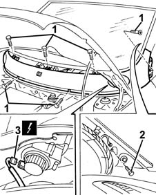

7055A20 FRONT TRIM under WINDSCREEN with main beam headlamps - R.R.
- Path
- Procedures > 70 FITTINGS > 7055 MOULDINGS ON PROTECTIONS > 7055A EXTERIOR MOULDINGS > 7055A20 FRONT TRIM under WINDSCREEN with main beam headlamps - R.R.
- Kind
- repair procedure (removal / refitting; the operation number is the code)
- Applies to
- all engines; production: fino a 05/99, da 09/03, da 06/99 a 03/02, da 04/02 a 08/03, fino a 05/04
- Interactive page
- https://sloeber94.github.io/elrnDB-fMltpl/en/#/2892257
Applies to: all engines; production: fino a 05/99, da 09/03, da 06/99 a 03/02, da 04/02 a 08/03, fino a 05/04
 Removing
Removing
 Refitting
Refitting5050B32 windscreen wiper arm/s - r+r (right and left)
7055A18 Windscreen base TRIM - R.R. .
7040H30 front pillar trim - r r (right and left).
1. Undo the external bolts.
2. Undo the internal bolt from bolt sides.
3. Disconnect the electrical connections for the main beam headlamps.
 | Name | Connector |
|---|---|---|
3 | Left main beam |
| Name | Connector |
|---|---|---|
3 | Right main beam |
4. Save the trim.

Applies to: all engines; production: fino a 05/99, da 09/03, da 06/99 a 03/02, da 04/02 a 08/03, fino a 05/04
Refitting
RemovingCheck that the trim is undamaged.
Connect the electrical connections to the main beam headlamps.
Fit the trim in its seating.
Tighten the internal and external bolts.
7040H30 front pillar trim - r r .
7055A18 Windscreen base TRIM - R.R. .
- 5050B34 windscreen wiper arm/s complete with blade - r+r (right and left)
Topics linked from this page (5)
- 5050B32 windscreen wiper arm/s - r+r
- 7040H30 front pillar trim - r r
- 7055A18 Windscreen base TRIM - R.R.
- F12 Left main beam
- F13 Right main beam
Topics that link to this page (7)
- V01 WATER PENETRATION PASSENGER COMPARTMENT, FRONT AREA
- 5010B08 VENTILATION SYSTEM OUTSIDE AIR PURIFYING FILTER (ANTIPOLLEN) - R+R
- 5050B38 WINDSCREEN WIPER ASSEMBLY - R+R OR REPAIR
- 5050B42 WINDSCREEN WIPER MOTOR - R+R
- 7035A14 OUTER WINDSCREEN MOULDING - R R
- 7035A18 WINDSCREEN GLASS R R INCLUDING CLEANING OF HOUSING
- 7055A50 frieze, hinge cover or code (one) - r+r